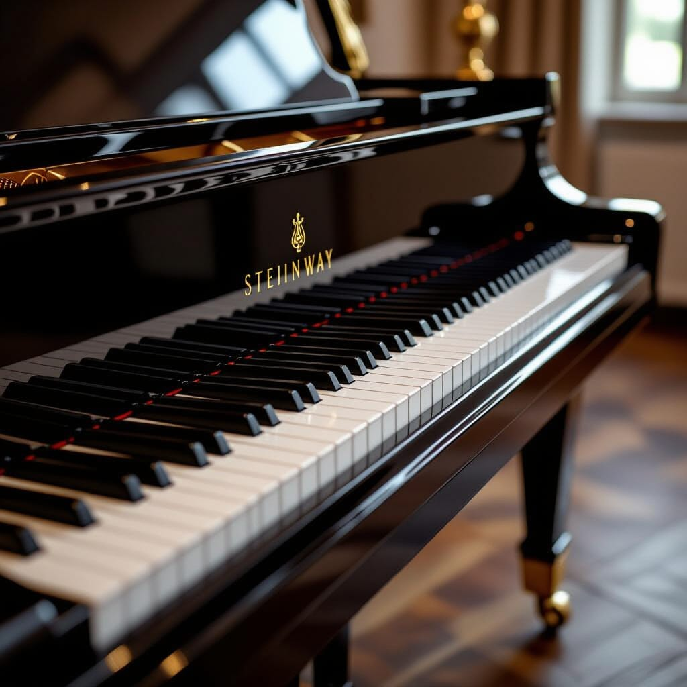

Classical Music Journey
What is Classical Music
Classical music is a broad term rooted in European traditions for centuries, that was later on expanded in the 19th and 20th century to other parts of the world. These traditions stretch from the Baroque period where Bach mostly dominated this period, to the Romantic period where works of Chopin, Beethoven, Liszt, and Brahms, and into modern classical music where Debussy and many other composers have left their mark in history. Classical music is built on structure unlike other modern genres of music, but it was also built upon creativity, and expression; this has eventually shaped most of today's musical styles.

Why is Classical Music still Important?
Although, many of these compositions are centuries old such as Beethoven's Moonlight Sonata op. 27, Chopin's Nocturnes, or Debussy's Clair De Lune—they still hold massive influence in modern composers and musicians. From emotional language to technical structures and iconic melodies.
Film Scoring:
Film composers are essentially the classical composers of our time, and they get inspired directly from classical music repertoire. For example:
- The "Death Waltz" showcased in movies like Harry Potter, The Godfather, or Star Wars, which uses distorted and often use minor-key waltz to create an unease atmosphere. This is a technique taken straight out of the Romantic era, which integrates, express, and evoke emotion towards the audience.
- The tenses and minimalist piano patterns in Philip Glass' music (like in The Truman Show (1998), Notes on a Scandal (2006), or Koyaanisqatsi (1982)), echoes the repetitive structures of the Baroque-era composers like Bach. Many films and mostly in thriller or scary movies use such repetitive structure to build up to a climax.
Modern Music:
Many iconic songs that stay relevant through the ages are either directly sampled from or heavily inspired by classical music pieces. For example:
- Muse's "Plug in Baby" uses a main riff heavily inspired by Bach's Toccata and Fugue in D minor. They transposed Bach's organ melody into a modern rock guitar riff.
- Maroon 5's "Memories" uses a chord progression and melody from Pachelbel's Canon in D, which is one of the most famous pieces of Baroque music.
- Lana Del Rey's song "Bartender" showcases a melody that closely mirrors Chopin's Nocturne in E-Flat Major, Op. 9, No. 2.
Video Game Soundtracks:
Video game composers use classical techniques to build immersive worlds that evoke emotions. For example:
- The soundtrack for the game BioShock Infinite, set in 1912, features beautiful, era-appropriate arrangements of period songs. More importantly, its original score by Garry Schyman uses modernist, dissonant techniques reminiscent of early 20th-century composers like Stravinsky to depict a society in collapse.
- The Final Fantasy series, composed by Nobuo Uematsu, is famous for its sweeping, Romantic-style piano themes that convey epic stories, heroism, and loss, much like a Chopin ballade or a Beethoven symphony.
Classical music is timeless. As long as musicians and artists continue to express emotions and tell stories through their work, the traditions and structures of the past will never die; they will simply continue to evolve for new generations.
Why the Piano?
I started learning the flute back in elementary grade in the Colegio de Nuestra Señora de las Delicias in Spain, Madrid. I learned under professor, but I didn't properly was introduce to classical music through and I was just playing some beginner pieces step by step. But, whenever I was studying or anything else my mother use to put this DVD cassette with various classical music, and I enjoyed every moment.
As I grew up, I stop playing the flute and try to focus on what I truly enjoyed football (soccer). But later one due to certain circumstances I found myself trying to learn an instrument. Among the many instruments, what caught my eye the most was the piano. I rediscover my passion I had for football, but in music, I felt enjoyment trying to learn new pieces that seemed impossible and the way I could express myself in different ways with the same piece.
I started learning the piano not in a formal classroom, but through curiosity. At first, I struggle to sight read and move my hands the way I wanted. But the more I practice, the easier it got. I even started playing pieces beyond my level in order to challenge myself such as Beethoven 2nd Sonata, Moonlight Sonata op.27, and Clair de Debussy, Clair de lune. Been self-taught is not easy, as you don't have anyone to tell you what you doing wrong but every breakthrough feels more rewarding. I see the piano not just any other instrument, but a lifelong companion that I hope to master someday.